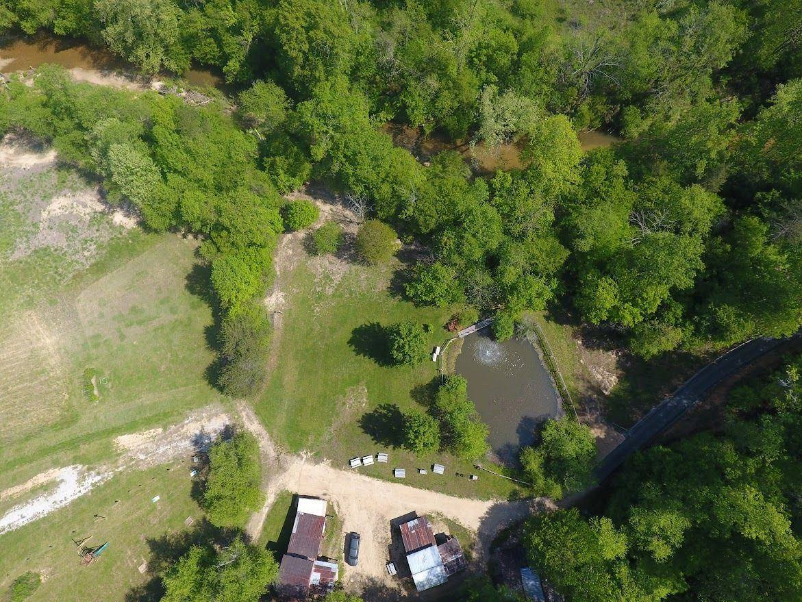
Nine places, one farm
Mix and match: ceremony by the pond, cocktails in the tap room, dinner in the barn.
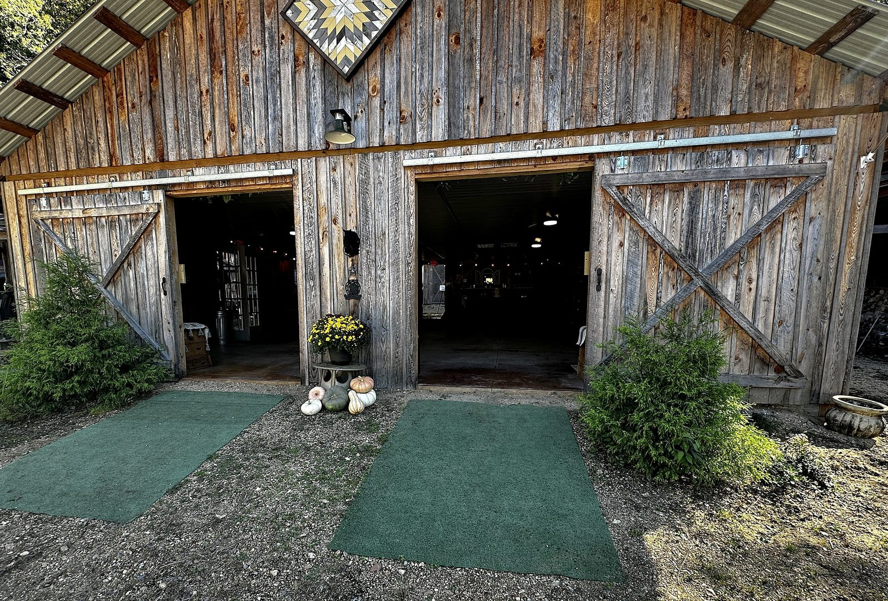
The Barn
Our rustic entertaining barn is the heart of the farm: string lights, rustic charm, room for dinner and dancing. Seats up to 50 guests with tables and chairs, or up to 80 with seating only, per the fire marshal.
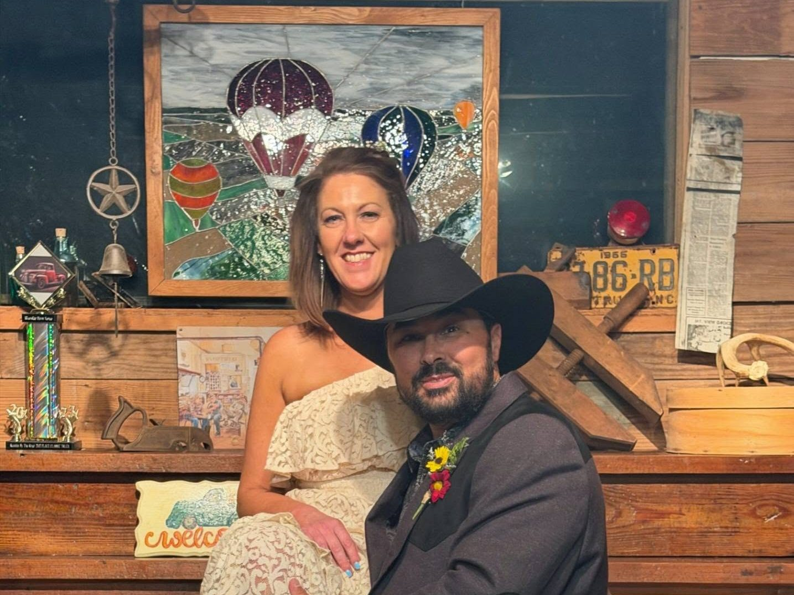
The Tap Room
Our tap room is really small, but it’s full of charm and great for pictures. On event days it works as a handy prep area for food and such, and it can also serve as your bar area. It connects to a covered grilling area. Guests are responsible for obtaining any alcohol permits.
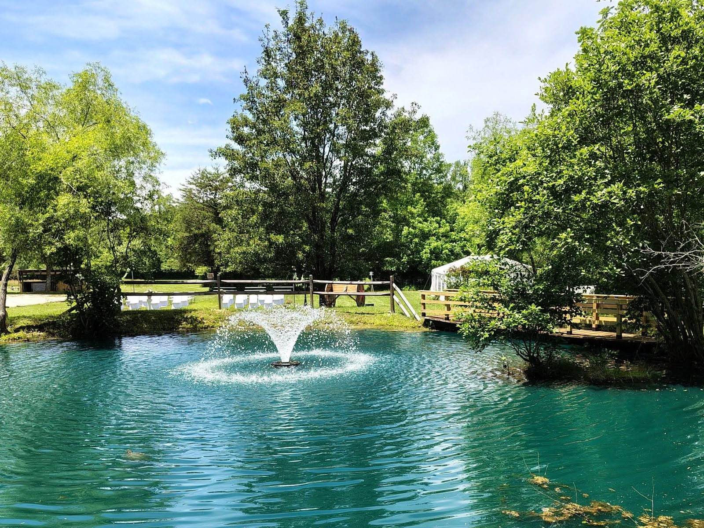
The Pond
Our favorite spot for photos, especially at sunset.
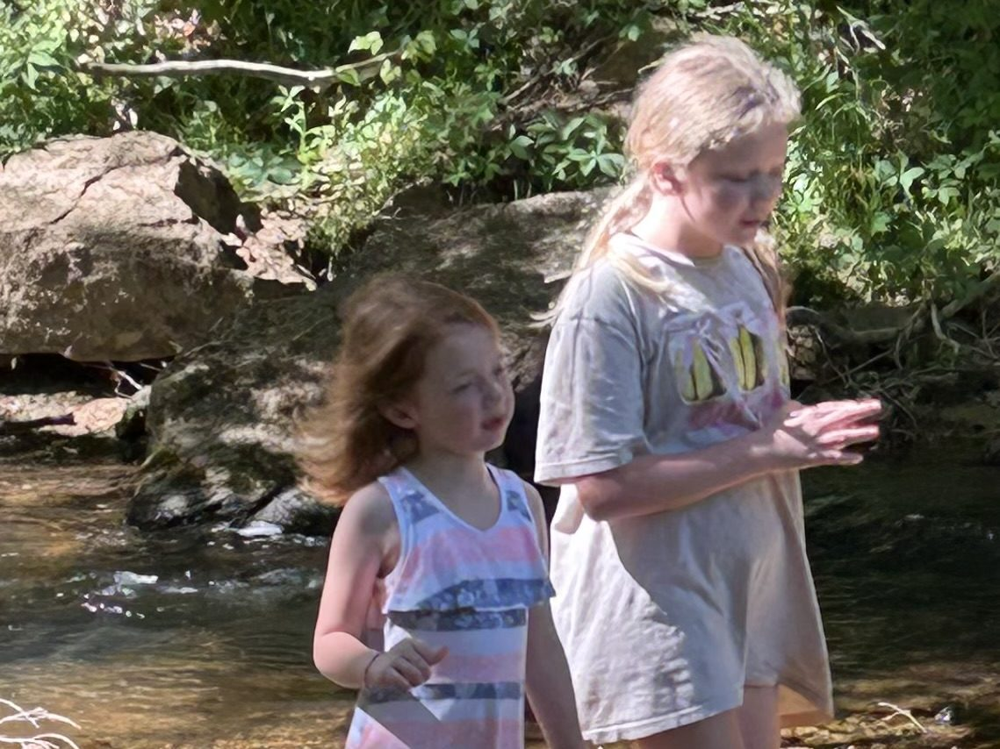
By the River
The farm sits on the Little Yadkin River.
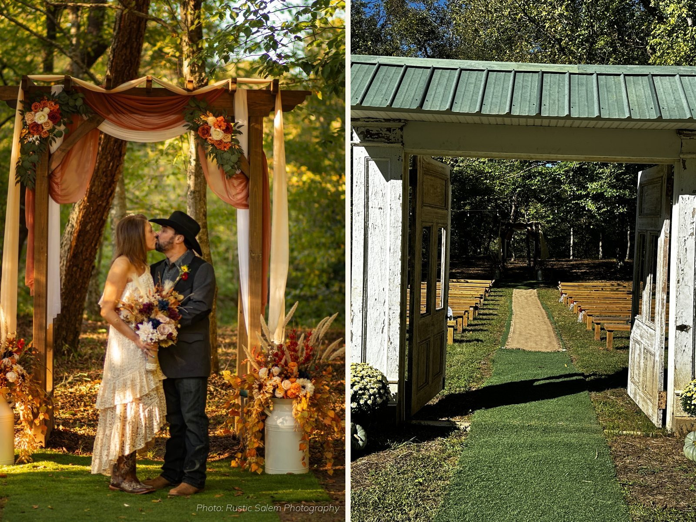
The Lower Ceremony Spot
A peaceful spot below the barn for vows. Guests enter through an entry doorway with doors for the bride to walk through, wooden benches line both sides of the aisle, and a large wooden arch frames the ceremony.
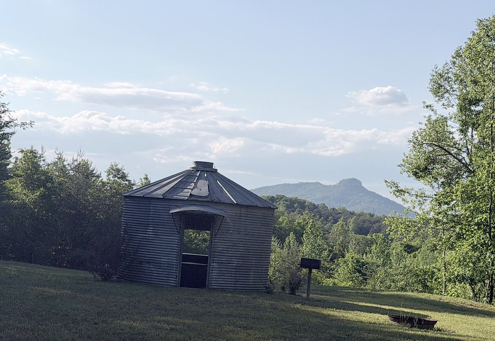
The Grain Bin
A sweet spot for photo shoots, with beautiful views of Pilot Mountain.
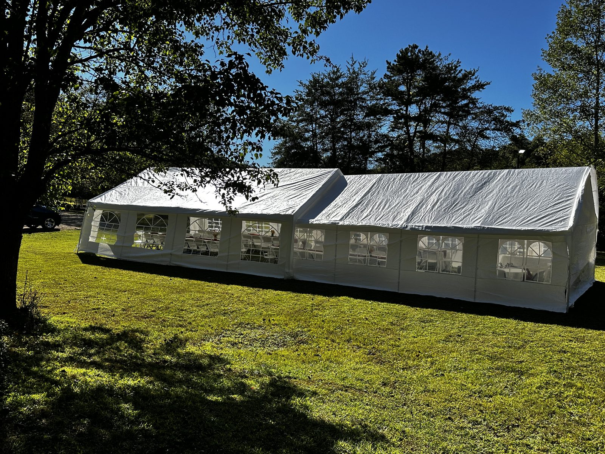
The Field
Wide, open and ready for a tent when your guest list grows. Our 20x26 and 20x30 tents join to make one 20x56 space, and you’re welcome to rent tents from outside vendors, too.
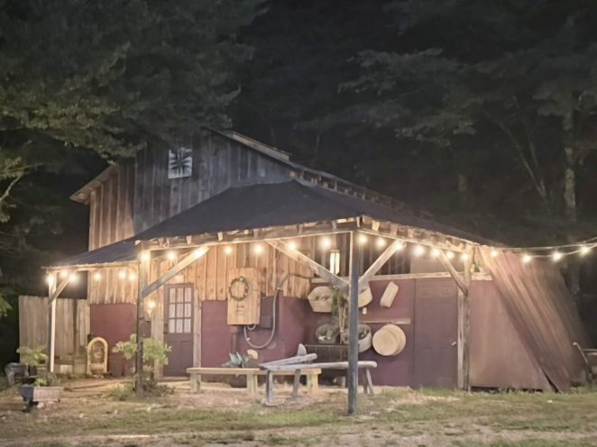
The Bridal Cabin
Get ready in comfort, steps from the ceremony. There’s also a small space where the groom can get ready.

The Playground
A dedicated playground area for the little ones.
Riverside after dark
When the sun goes down, the string lights and the lit fountain take over.
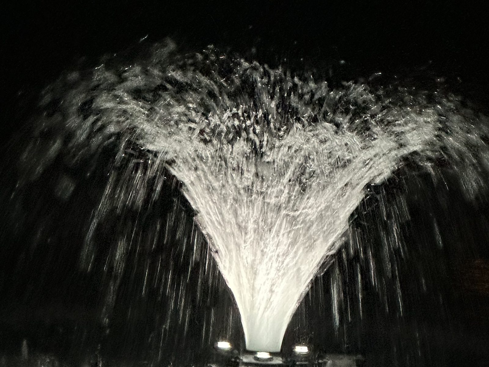

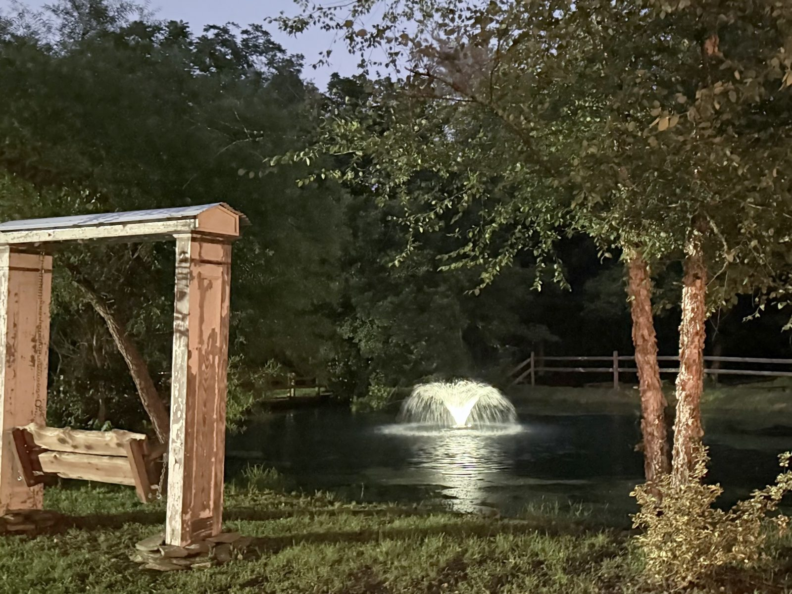
1466 Rierson Rd
Tobaccoville, NC 27050
About 20 minutes from downtown Winston-Salem, with hotels about 15 minutes away; near King, Walnut Cove, Pinnacle and Hanging Rock State Park.
Illustrative map; the live Google Map embed goes here in Wix.
Come walk the farm.
Photos only tell half the story. Book a free 30-minute tour with Paula or Penny and see every corner for yourself.